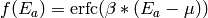
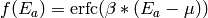
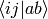
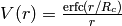

System¶
- SYSTEM [system type]
- Starts system block. The system type must be provided and specifies the basis upon which NECI performs a calculation. ORDER is only valid for some system types—see below.
[System options—see below.]
- ENDSYS
- End the system input block.
The available system types fall into three categories:
Read in data produced by a molecular computational chemistry package:
- READ [ORDER] [NOORDER]
Perform a calculation on a (molecular) system based upon reading in the integrals produced by a third-party program from disk.
- GENERIC [ORDER] [NOORDER]
Synonym for READ.
Use a model system:
- BOX
Run a calculation on electrons confined to a box. See [TwoElBox] for more details.
- HUBBARD
Run a Hubbard model calculation.
- UEG
Run a uniform electron gas calculation.
Periodic systems:
- CPMD [ORDER] [NOORDER]
Perform a calculation based upon the Kohn–Sham wavefunctions produced by CPMD. Only available in a combined CPMD-NECI executable.
- VASP
Perform a calculation based upon the Hartree–Fock wavefunctions produced by VASP. Only available in a combined VASP-NECI executable.
- ORDER
- If ORDER is specified directly after READ, GENERIC, then a quick HF calculation in the space of the orbitals is performed. The orbitals are then reordered according to the HF energies, rather than using the orbital energies read in.
- NOORDER
Do not re-order the orbitals, but keep them in the order they arrive.
If CPMD is followed by ORDER, then the CPMD orbitals are ordered, not according to their Kohn–Sham eigenvalues, but instead according to their one-electron energies (i.e. with no exchange or correlation). ORDER is not valid for any other system type.
General options¶
- RANLUXLEV [iRanLuxLev]
- Default=3 Set the random number luxury level.
- MERSENNETWIST [OFF]
Default=.true.
Use the Mercenne Twister random number generator. This is about 10 times faster than Ranlux. It can be used for FCIMC parallel calculations and random excitation generation using symgenrandexcit2.F90 routines. This is now on by default.
- BANDGAP
- Perform calculations for systems containing NEL, NEL+1, and NEL-1 electrons and extract the band gap energy.
- COULOMB [FCOUL]
- Multiply the strength of the coulomb interaction by FCOUL.
- COULOMB-DAMPING ENERGY [
 ]
] - Damp the two-electron coulomb integrals,
 with factor
with factor  where
. A
where
. A  of 1 gives a damping range of 2; a of 40 gives a damping
range of 0.05.
of 1 gives a damping range of 2; a of 40 gives a damping
range of 0.05. - COULOMB-DAMPING ORBITAL [ORB ]
- Damp the coulomb integrals as above, with MU set to be halfway between the energies of ORB and ORB+1.
Note
COULOMB-DAMPING is now disabled [26/7/06].
- CSF-OLD [STOT]
Default OFF. Default STOT=0.
If specified, work in CSFs rather than determinants. CSFs might not function properly for some Monte Carlo, but should work for vertex sums and diagonalization. STOT is twice the magnitude of spin to restrict the resultant space.
This uses the old CSF routines, which cannot make use of random excitation generation.
- CSF [STOT]
Default OFF. Default STOT=0
If specified, work in CSFs rather than determinants. STOT is twice the magnitude of the spin to restrict the resultant space.
It is recommended, although not necessary, to restrict Ms to the same value as the total spin, using the option SPIN-RESTRICT STOT
- TRUNCATE-CSF [csf_trunc_level]
Default OFF
Requires CSF
Use CSFs rather than determinants only for spatial configurations with fewer than csf_trunc_level unpaired electrons. Above this level, transition to using a normal determinential representation.
This avoids the extremely high computation cost of matrix elements for CSFs with large numbers of unpaired electrons, whilst retaining the specified spin structure for the spatial configurations which contribute the most to the final wavefunction.
- ELECTRONS [NEL]
- Specify the number of electrons. Required for all system types apart from CPMD- or VASP-based calculations.
- ENERGY-CUTOFF EMax
Default off.
Reject basis functions with an (unscaled) energy larger than EMax.
- EXCHANGE [ON | OFF]
Default ON.
Specify whether to include Exchange in the Slater-Condon rules. If off, we are effectively reduced to a using Hartree multi-electron wavefunctions rather than Slater determinants.
- UMATEPSILON [UMatEps]
Default OFF
This works when integrals are read in from an FCIDUMP file. If specified, it provides a cutoff for the magnitude of the two-electron integrals. If the integrals are larger than the size specified, they will be zeroed.
CALCMCSIZESPACE [CalcDetCycles] [CalcDetPrint]
This option will calculation the exact size of the determinant space, including spin- polarization, spatial symmetry, Lz symmetry, and truncation of the excitation level if included, in a MC fashion. It is parallelised, and takes the values (INTEGER*8s) CalcDetCycles - the number of MC cycles per processor, and CalcDetPrint - the number of cycles before the stats of the MC run are printed to a “SpaceMCStats” file. This file gives the iteration number, the number of allowed determinants generated, the fraction of generated determinants which were allowed, and finally, the expected size of the space from the run so far.
- CALCEXACTSIZESPACE
Default false.
This will calculate the exact size of the symmetry allowed space before any calculations are performed. Only determinants with the same Sz value as the reference are included. This scales badly and is unsuitable for use with large systems.
- NONUNIFORMRANDEXCITS [NOSYMGEN | CYCLETHRUORBS]
Default false.
These are new excitation generators, currently only interfaced with the parallel FCIMC algorithm. They are generated with normalised probability, but not uniformly. They scale well however at O[N]. NOSYMGEN means that spatial symmetry will not be considered when generating the excitations and cyclethruorbs indicates that only orbitals which are allowed will be randomly selected, although this involves an O[M] loop over the basis and is marginaly slower, but will not need to redraw forbidden orbitals many times. This may be useful for small basis-set sizes with high symmetry.
- FAST-EXCITGEN [ OFF ]
Default on. Temporary flag [ AJWT 2008/09/22 ] Used to indicate that if an Abelian symmetry group is present the excitation generators should use optimized routines to take this into account. Not all (i.e. no) excitation generator functions currently work with this. USE WITH CARE This will disable itself if it detects non-abelian symmetry.
Warning
The excitation generators for Abelian symmetries are currently incompatible with density-fitting. Density fitting calculations should use FAST-EXCITGEN OFF.
- NORENORMRANDEXCITS
Default off.
Since we have already calculated the number of excitations possible for each symmetry type, there no need to renormalise all excitations with weight 1. As long as pairs of allowed occupied and virtual orbitals can be chosen without any bias, then we can generate random excitations in O[1] time. This is default off since it will change previous results, however it is strongly recommended to be on for virtually all unweighted MC calculations, since it should speed up generation, especially in low symmetry and/or large systems. However, currently this facility is not possible for use with doubles with abelian symmetry, unless FASTEXCITGEN is OFF, or STORESTATELIST is activated. For single excitations, the list is not needed, and so they will always be chosen faster.
- STORESTATELIST
Default off.
This indicates that the list of state pairs is stored. This is taken by default to be off, however, for non-abelian symmetry, or if FASTEXCITGEN is OFF, then it will be stored no matter what. The advantage to storing the list is that NORENROMRANDEXCITS can be used with double excitations, leading to quicker generation of determinants if there is no weighting function. However, this can use a not insignificant amount of memory and some of the abelian features in the excitation generator setup are no longer used. It is hoped that soon the ability to generate random unweighted excitations without renormalisation will be available without storage of the state pairs.
- ASSUMESIZEEXCITGEN
Default off.
This indicates that the size of excitation generator will be calculated on the basis of the upper bound of the memory needed. This means that there is no need to run through the excitations twice to count and then allocate the memory for the excitations. This makes calculation of the excitation generators very much faster. The first entry to symgenexcitit2 will now simply return the maximum size of the excitation generator. This size is actually smaller than the full excitation generators, since various components of the generators is left out, namely: Iterator info, STORE info, nAllowPPS and SymProds arrays. Because of this, the excitation generators are smaller, but also are only useful for random excitation generation. If code which fully enumerates excitations is used with this flag, things will go very wrong.
- NEL [NEL]
- Synonym for ELECTRONS.
- LZTOT [LzTot]
- Constrain the z-component of the angular momentum for atomic, diatomic and linear molecules to be LzTot. This means that the orbitals are complex, but the integrals are all real. The orbitals need to be transformed from the HF canonical ones to the complex ones using LzTrans.x (on svn).
- NOSYMMETRY
- Ignore all spatial symmetry information. This does not apply to periodic calculations or the hubbard model.
- SPIN-RESTRICT [LMS]
- Default off. Default LMS=0. Turns spin restriction on, limiting the working space to the z-component of spin being LMS*2.
- SYM [
 iSym]
iSym] Default off.
If specified, limit the working Slater determinant space to the set of determinants with the specified symmetry quantum numbers. The symmetry of a given orbital is specified in one of two ways:
- model system calculations:
- 3 quantum numbers, .
- molecular or periodic calculations:
- Symmetry label, iSym, which corresponds to an irreducible representation of the symmetry group.
The symmetry label(s) of each orbital is included in the output, from which the symmetry of the desired set of Slater determinants can be evaluated (albeit in a somewhat laborious manner). All four numbers are required, but only the relevant one(s) are used.
For Abelian symmetry groups, each symmetry is printed out in terms of a propogating vector. Internally an integer label is still used, according to the formula:

where
 are the components of the propogating vector.
are the components of the propogating vector.- SYMIGNOREENERGIES
- When calculating Sym Reps, NECI assumes that orbitals with energies differing by more than 1e-5 do not transform together. Specifying SYMIGNOREENERGIES forces NECI to always regard beta/alpha pairs as of the same sym rep (even if they have different actual symmetries). This is mighty dangerous in general, but can be used to perform ROHF and UHF calculations, if orbitals are in paired order.
- USEBRILLOUINTHEOREM
- Apply Brillouin’s theorem: the net effect of single-excitations of the Hartree–Fock determinant coupled to the Hartree–Fock determinant is zero, so explicitly exclude such single excitations.
- NOBRILLOUINTHEOREM
- For the FCIMC parallel calculations, brillouins theorem is on by default. To disable this, this keyword is required (for say non-HF orbitals, ROHF orbitals, rotated orbitals...). This is automatically turned on if the ROHF or ROTATEDORBS keyword is also supplied.
- ROTATEORBS [TimeStep] [ConvergedForce]
- This keyword initiates an iterative rotation of the HF orbitals to find the coefficients that best fit a particular criteria (e.g those which maximise the sum of the <ii|ii> values). This is followed by two real values, the first indicates the size of the iterative steps, and the second is the force value chosen to indicate convergence. The default time step is 0.01, and convergence value is 0.001. Further options are described below.
- SPAWNLISTDETS
- This means that a file called SpawnOnlyDets will be read in before a spawning calculation, and only the determinants listed in this file will be able to be spawned at. Currently, this only works for FCIMCPar calculation.
- ROTATEDORBS
- This keyword is required in the system block if a ROFCIDUMP file is being read in (after orbital rotation). As the orbitals are no longer the HF orbitals, Brillouin’s theorem does not apply, and the projected energy must include contributions from walkers on single (as well as double) excited determinants. NOTE: Currently, if electrons are frozen in a rotation calculation, they are incorporated into the core energy in the ROFCIDUMP file. So the number of electrons specified in an input file which reads in an ROFCIDUMP, needs to be the NEl-No.FrozenEl, and the number frozen in the INTEGRAL block needs to be set to 0. This will hopefully be fixed in the near future.
- ROHF
- This is to be used when we are reading in integrals from an FCIDUMP interface for a restricted open-shell system. Without this keyword, ROHF and UHF are treated the same and the integral file and calculations are performed on spin-orbitals. However, for ROHF, this results in a duplication in the storage of the integrals, since integrals of the same spatial orbitals are stored multiple times. With this option, the integrals for ROHF systems are stored as spatial orbitals, not spin orbtials, which leads to a ~16x memory saving! The results should be unchanged by this option, and the integral file can remain in spin-orbitals. A word of warning is that with ROHF systems, the fock eigenvalues for the orbitals are different between alpha and beta spins, but with this, the eigenvalues are written out as the same (the value of the alpha one). This means that the eigenvalues cannot be trusted and values derived from them will be wrong (such as the chemical potential which is printed out.)
Read options¶
- BINARY
- Read in an unformatted FCIDUMP file containing the molecular integrals.
- DensityFitted
- Read in a set of density fitted coefficients and coulomb integrals from files SAV_DFaSOL and SAV_Ta_INT (generated by [CamCasp]). One-electron integrals are read in from HONEEL, which also contains
and
integrals (generated by readintOCC.x—a local package).
- RIIntegrals
- Read in Rsolution of the identity (much the same as Density Fitting) integrals from RIINTDUMP ( these are generated by Q-Chem). One-electron and HF eigenvalues are taken from the FCIDUMP file (as well as two-index two-electron integrals).
- STARSTORE [BINARY]
- Only the integrals required for a double-excitation star calculation are read in from an FCIDUMP. The one-electron integrals, which we call TMAT elements, are stored as integrals involving spatial orbitals, meaning that UHF is no longer available. In addition, only non-zero one-electron integrals i are stored. The memory required to store the coulomb integrals is massively reduced, from
to just
, where
and
are the total number of orbitals and the number of occupied orbitals respecitvely. We only store the  integrals in the UMAT array, where i and j are occupied, as well as the
and
- STORE-AS-EXCITATIONS
- Store determinants as a 4-integer list of orbitals excited from, and orbitals excited to, in comparison to the reference determinant, rather than as an n-electron list of the occupied orbitals in the determinant. This means that the scaling is reduced to
rather than
, as we run through the list for each excitation. Currently only working for the 2-vertex star Fock-Partition-Lowdiag calculations.
- READCACHEINTS
Default=.false.
This means that the FCIDUMP file will be read in the integrals in it will be cached. This means that less space should be used for storage of the integrals, however, it will be slower since the integrals will need to be binary searched.
Model system options¶
The following apply to electron in a box, Hubbard model and uniform electron gas calculations, unless otherwise noted.
- BOXSIZE [A [BOA COA] ]
Required for UEG and BOX calculations. BOA and COA optional. Default BOA=COA=1.
Set lattice constants a, b and c respectively, where b and c are defined as a ratio of a.
- CELL [NMAXX NMAXY NMAXZ]
- Maximum basis functions for each dimension. For HUBBARD and UEG, functions range from -NMAXi to NMAXi, but for BOX, they range from 1 to NMAXi, where i=X,Y,Z.
Box options¶
- ALPHA [
 ]
] Sets TALPHA=.true. and defines
.Integrate out the Coulomb singularity by performing part in real space and part in Fourier space, with the division according to the screening parameter
. See [TwoElBox].- MESH [NMSH]
Default NMSH=32.
Number of mesh points used for calculating integrals.
Hubbard options¶
- B [BHUB]
Default=0.
Sets B (hopping or kinetic energy) parameter for the Hubbard model.
- U [UHUB]
Default=0.
Sets U (on-site repulsion) parameter for the Hubbard model.
- REAL
- Set Hubbard model to be in real space.
- APERIODIC
- Hubbard model is set to be not periodic.
- TILT [ITILTX ITILTY]
Default off.
The Hubbard model is tilted and the unit vectors are (x,y)=(ITILTX,ITILTY) and (-y,x). Require x
 y.
y.
UEG options¶
- EXCHANGE-CUTOFF [
 ]
] Use the method detailed in [AttenEx] for calculating the exchange integrals.
Sets cutoff distance
for the exchange electron-electron
potential. If is not explicitly set, it will
be set to be equivalent to a sphere of the same volume as the cell,
 .
.- EXCHANGE-ATTENUATE []
- Use an expoentially attenuated exchange
Sets attenuation parameter for the exchange electron-electron
potential. If is not explicitly set, it will
be set to be equivalent to a sphere of the same volume as the cell,
.
- EXCHANGE-DAMPING []
- Sets cutoff parameter for attenuated or cutoff potential
. If is not explicitly set,
it will be set to be equivalent to a sphere of the same volume as the cell,
.
Orbital rotation options¶
The minimum keywords required for this method are the above described ROTATEORBS, the type of rotation / localisation, and an orthonormalisation method.
Type of rotation / localisation:
- OFFDIAGSQRDMIN [OffDiagWeight](optional)
- This method finds the linear combinations of the HF orbitals that most effectively minimise the sum of the <ij|kl>^2 values, where i,j,k,l are spin orbitals and i.ne.k, and j.ne.l.
- OFFDIAGSQRDMAX [OffDiagWeight](optional)
- This method finds the linear combinations of the HF orbitals that most effectively maximise the sum of the <ij|kl>^2 values, where i,j,k,l are spin orbitals and i.ne.k, and j.ne.l.
- OFFDIAGMIN [OffDiagWeight](optional)
- This method finds the linear combinations that minimise the <ij|kl> integrals (without squaring).
- OFFDIAGMAX [OffDiagWeight](optional)
- This method finds the linear combinations that maximise the <ij|kl> integrals (without squaring).
- DOUBEXCITEMIN [OffDiagWeight](optional)
- This method finds the linear combination that minimise the antisymmetrised double excitation hamiltonian elements, <ij|kl> - <ij|lk>.
- HFSINGDOUBEXCMAX
- This minimises the square of the four index integrals corresponding to single or double excitations from the HF determinant. I.e. Integrals of the form <ij|kl> where i and j are orbitals occupied in the HF determinant, and either k and l are both virtual, or k=i or l=j, but not both at once.
- VIRTCOULOMBMAX
- This maximises the sum of the <ij|ij> terms where i and j are both virtual spatial orbitals.
- VIRTEXCHANGEMIN
- This minimises the sum of the <ij|ji> terms where i and j are both virtual spatial orbitals.
- ERLOCALIZATION [ERWeight](optional)
This method performs a Edmiston-Reudenberg localisation. It finds the coefficients that maximise the sum of the self-repulsion (<ii|ii>) terms. In reality we minimise -<ii|ii> to keep the code consistent.
The presence of both the ERLOCALIZATION keyword together with one of the first three options finds the coefficients that both maximise the <ii|ii> terms and also fit the chosen off diagonal criteria. The contribution from each method can be adjusted by weighting the effect of either force. In the absence of values for ERWeight and/or OffDiagWeight, the defaults of 1.0 each will be used. These weights are also redundant if only one of the keywords is present.
- ONEPARTORBENMAX [Alpha]
- This maximises the sum of (e_i - e_min)^alpha, where e_i are the fock, one particle orbital energies ( e_i = <i|h|i> + sum_j [<ij||ij>] ), and e_min is currently the energy of the HF LUMO. Alpha is a real value specified in the input, with a default value of 1.0.
- ONEELINTMAX
- This maximises the sum of the <i|h|i>, one electron integral values.
- HIJSQRDMIN
- This minimises the square of the one electron integrals, <i|h|j>. Currently i can be occupied or virtual, but j can only be virtual, i=<j.
- DIAGONALIZEHIJ
- This option takes the <i|h|j> matrix of one electron integrals in the HF orbital basis and diagonalises it. It then uses the eigenvectors as the transformation matrix to form a set of new orbitals which have a diagonal <i|h|j> matrix. This is the extreme case of minimising the off diagonal <i|h|j> matrix elements.
- READINTRANSMAT
- With this option, a TRANSFORMMAT file must be provided which contains the transformation matrix to be used for the orbital rotation. When this keyword is present, the coefficient matrix is simply read in from the file, and used to transform the relevant integrals and print a new ROFCIDUMP file.
- USEMP2VDM
- With this option, the MP2 variational density matrix is calculated and then used to transform the orbitals and produce a new ROFCIDUMP file. The MP2VDM is given as follows: MP2VDM = D2_ab = sum_ijc [ t_ij^ac ( 2 t_ij^bc - t_ji^bc ) ] Where: t_ij^ac = - < a c | i j > / ( E_a - E_i + E_b - E_j ) Ref: J. Chem. Phys. 131, 034113 (2009) (note Eqn 1 is mis-printed, the cb indices should be bc). Having calculated the MP2VDM matrix, this is diagonalised. The eigenvectors correspond to the transformation matrix, which produce orbitals whose occupation numbers are given by the respective eigenvalues. These eigenvalues ideally decay exponentially, so in principle we may remove some of the low occupancy virtual orbitals without loosing much accuracy in the energy calculation. This truncation of the virtuals is done using the Logging option TRUNCROFCIDUMP [NoFrozenVirt].
- USECINATORBS
- This option is similar to USEMP2VDM except that the one electron reduced density matrix is used instead of the MP2VDM to transform the orbitals. The 1-RDM has the form: < Psi | a_p+ a_q | Psi >, where a_q is an annihilation and a_p+ the creation operator acting on a determinant in Psi. In order to form this one electron reduced density matrix, we must first find Psi within the required truncation. This is done by performing a spawning calculation and histogramming the occupation at the determinants. The required histogramming is automatically turned on by using the USECINATORBS keyword, and at the end of the spawning, the 1-RDM is found from the amplitudes. The orbitals are then rotated using this matrix, and a ROFCIDUMP file of the resulting approximate natural orbitals is printed. The level of natural orbitals found is controlled by truncation of the excitation level in the spawning calculation. E.g. an excite 2 calculation results in the CISD natural orbitals etc.
Each of these methods may be applied for both the cases where symmetry as kept and broken. This is controlled by the absence or presence of the NOSYMMETRY keyword respectively. Also, the default option is to mix all orbitals (occupied and virtual) together.
Orthonormalisation methods:
- SHAKE [ShakeConverged]
This will use the shake algorithm to iteratively enforce orthonormalisation on the rotation coefficients. Convergence is reached once the sum of the orthonormality constraints is reduced to below the ShakeConverged value.
- SHAKEAPPROX
- This keyword is likely to be used when the matrix inversion required in the full shake algorithm cannot be performed. It initiates an approximatation to the method which treats each constraint in succession, and finds an appropriate lambda for each in turn. This clearly converges more slowely than the full method in which all constraints are dealt with simultaneously.
- SHAKEITER [ShakeIterMax]
- The presence of this keyword overrides the ConvergenceLimit specified with the SHAKE keyword, and instead the shake algorithm is applied for the number of iterations given by ShakeIterMax. It seems that with only a few iterations, although the coefficients do not remain completely orthonormal at every rotation step, orthonormality is eventually imposed throughout the course of the run.
- SHAKEDELAY [ShakeStart]
- This option sets the shake orthonormalisation algorithm to only kick in after a certain number of rotation iterations, specified by ShakeStart. This potentially allows a large shift in the coefficients away from their starting point before orthonormalisation is enforced.
- LAGRANGE
- This option can only be used if ROTATEORBS is specified, and will try to maintain orthonormality of the orbitals via a lagrange multiplier force, rather than an explicit reorthogonalization step each iteration.
Additional options:
- ROITERATION [ROIterMax]
- Much like SHAKEITER, the presence of this keyword overrides the convergence criteria on the force, and instead runs for the number of iterations specified here. Note: A SOFTEXIT is also an option in this method.
- SPINORBS
- Default=.false. This option ensures that spin orbitals are used in the rotation - as is required for open shell systems for example. IF UHF=.true. is present in the FCIDUMP file, this will be turned on automatically, but in special cases where this is not present and we still want to use spin orbitals, this keyword should be used.
- SEPARATEOCCVIRT
If present, this keyword separates the orbitals into occupied and virtual and does not allow mixing between the two. This has the advantage of keeping the energy of the reference determinant the same as the HF.
- ROTATEOCCONLY
- This option allows mixing amongst the occupied orbitals only, while keeping the virtual the HF.
- ROTATEVIRTONLY
- This option allows mixing amongst the virtual orbitals only.
- USEHFORBS
- This is mostly used for debugging as it just uses the identity matrix to ‘transform’ the HF orbitals. Can be compared to original HF results.
Note: With this method come logging options ROFCIDUMP, ROHISTOGRAM, and ERHISTOGRAM.